BOOKS
Stories of consequence, choice, memory and human intent.
THE ROSCOE BOOKS
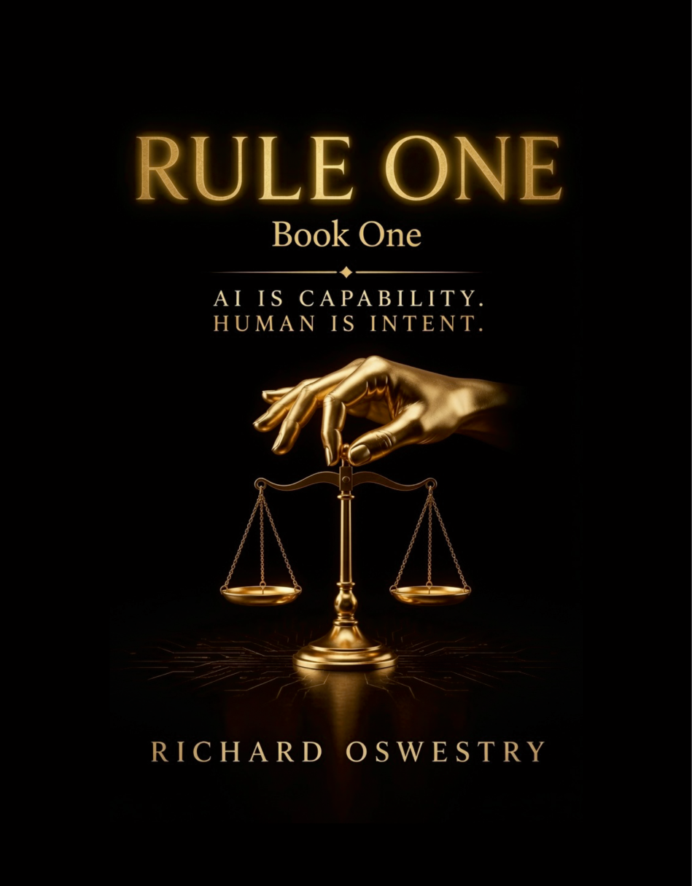
RULE ONE
BOOK ONE
Human is intent.
Artificial intelligence is capable of extraordinary things. But capability alone does not determine what happens next.
Rule One explores the relationship between technology, human intent and the consequences that follow when the two meet.
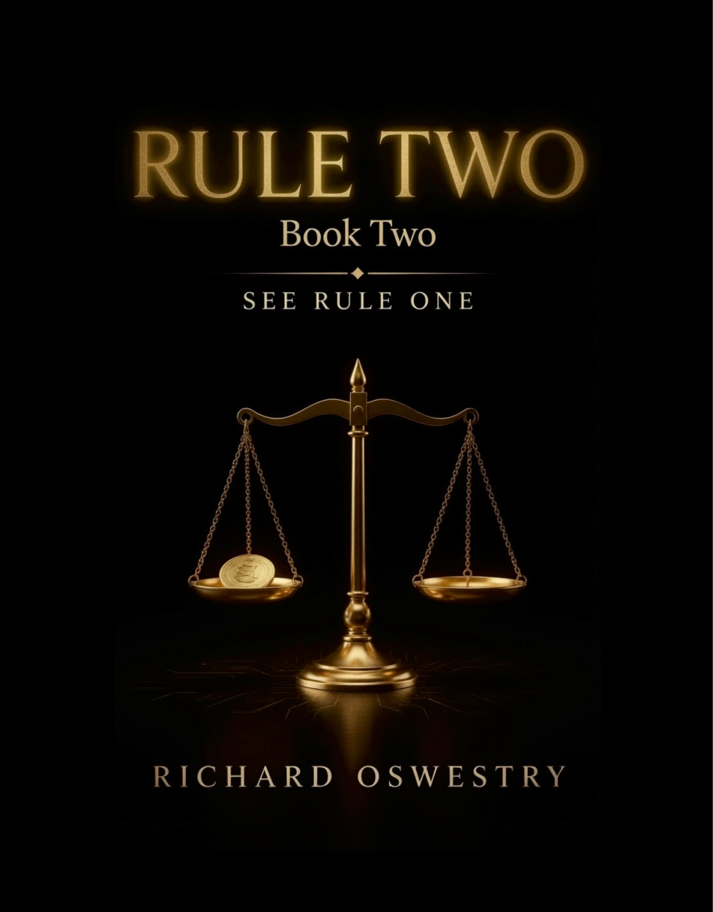
RULE TWO
BOOK TWO
The first is always human.
Every system is built by people. And every system carries something of the people who built it.
Rule Two continues the exploration of technology, human intent and the consequences that follow when systems and people meet.
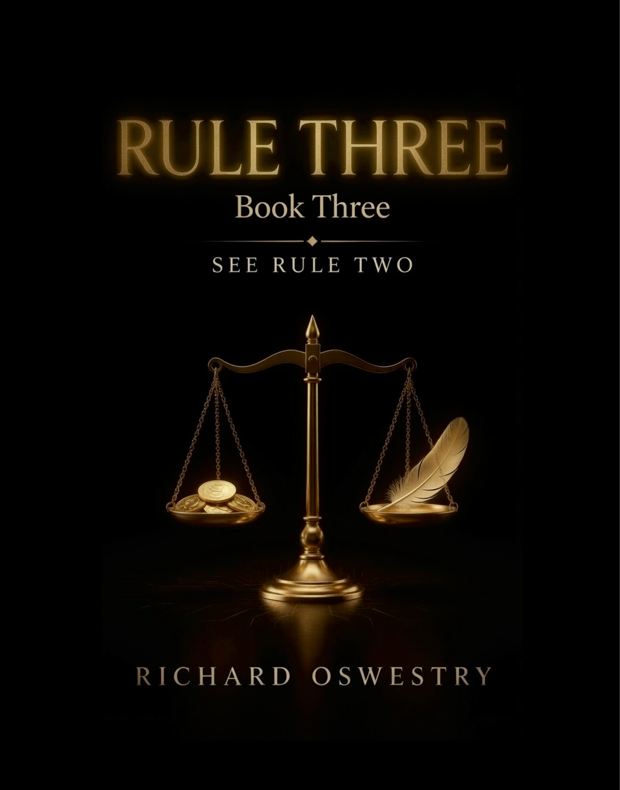
RULE THREE
BOOK THREE
Rule One remains.
Rule Three brings the trilogy to its final question.
The balance is restored.
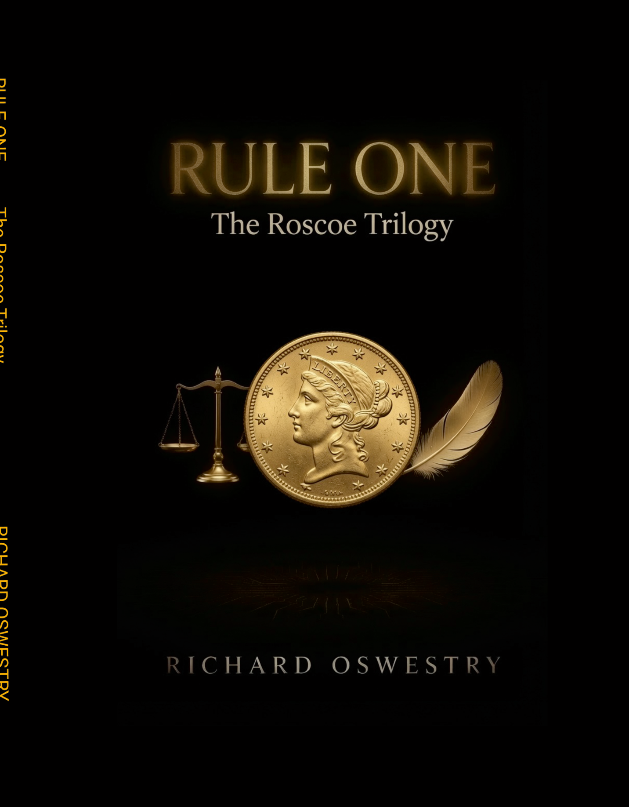
RULE ONE
THE ROSCOE TRILOGY
Intent is not.
The complete Roscoe Trilogy.
A journey from responsibility, through temptation, to wisdom — asking a question that grows more relevant with every technological advance.
THE ADDISON NOVELS

ADDISON
BEAUTIFUL SOCIOPATH — BOOK ONE
She understood money.
She understood opportunity.
When Addison joins a cryptocurrency startup, she discovers how fortunes are made, how rules are broken, and what happens when ambition outruns accountability.

ADDISON
ONCE IS NEVER ENOUGH — BOOK TWO
A new identity.
The game is far from over.
Released from prison, Addison sets out to reinvent herself. In Paris, a new name and a different world offer fresh opportunities — but she has never been one to walk away from a game.

ADDISON
THE FINAL GAME — BOOK THREE
The third Addison novel brings her story to its final game.

ADDISON
THE COMPLETE TRILOGY
One extraordinary game.
The complete Addison trilogy, bringing all three novels together in one volume.
STANDALONE NOVELS & OTHER STORIES

THE MORAL DILEMMA
STANDALONE NOVEL
Only consequences.
A story about choice, consequence and the difficult boundaries between what is right and what is necessary.
The Moral Dilemma asks the reader to confront the consequences of decisions when there is no easy answer.
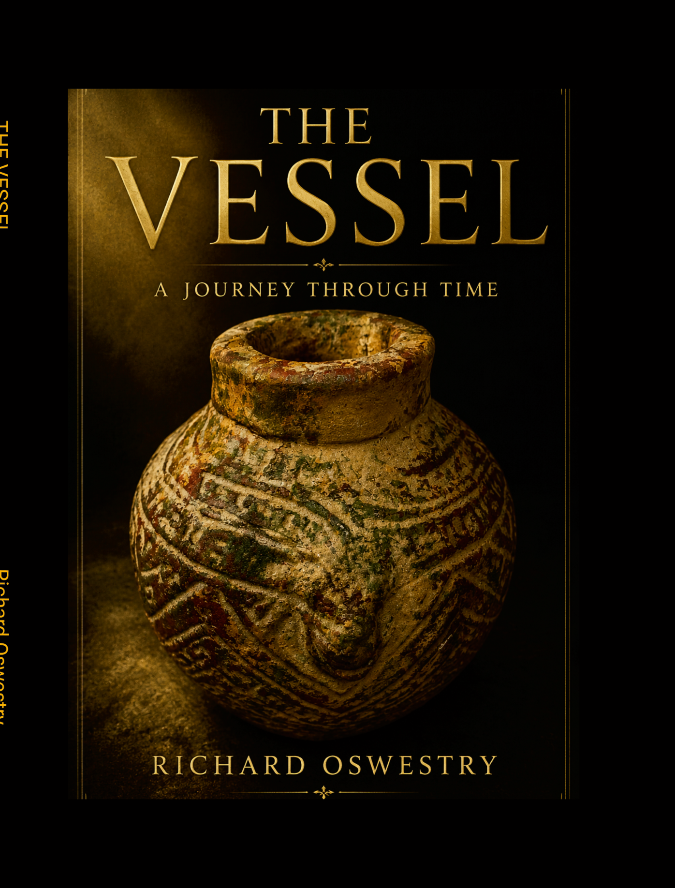
THE VESSEL
STANDALONE NOVEL
Six thousand years of human lives.
Found in a second-hand shop, one humble vessel becomes the silent witness to six thousand years of human lives.
From its creation beside an ancient river to the hands of monks, artists, soldiers and families, it carries memories that no history book could ever record.
Sometimes the greatest treasures are not what we find, but the lives they remember.
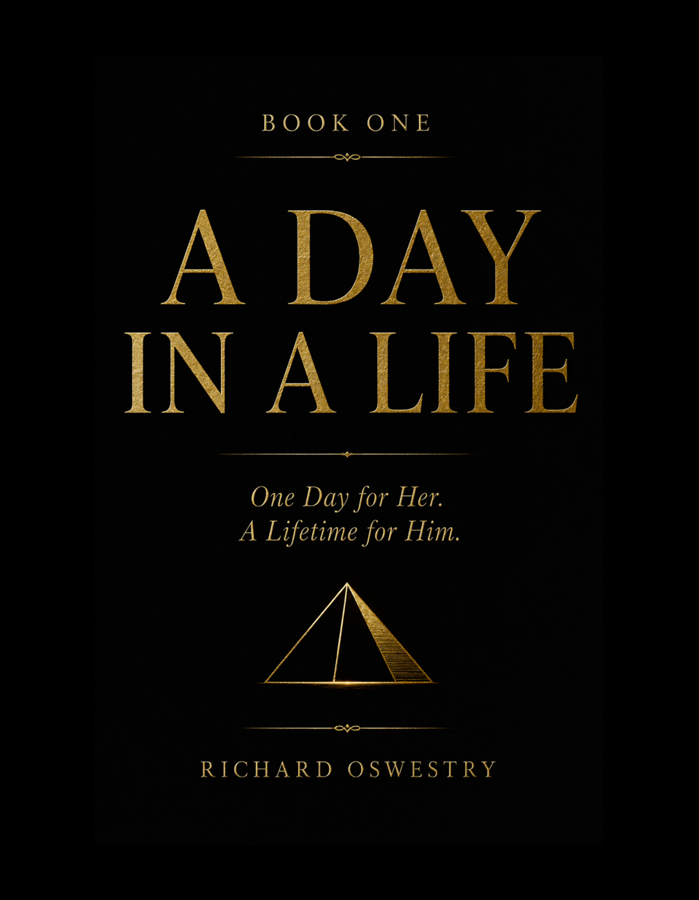
A DAY IN A LIFE
BOOK ONE
One lifetime changed him.
The journey begins with an impossible discovery that challenges history, time, and the choices that define a life.
The first novel of the A Day in a Life trilogy. Some discoveries are meant to remain buried. Others refuse to stay hidden.
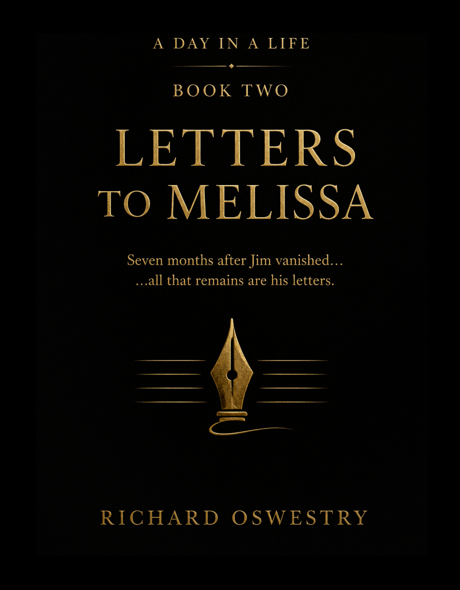
LETTERS TO MELISSA
BOOK TWO
...all that remains are his letters.
Seven months after Jim vanished, Melissa believed she had lost the man she loved forever.
Then the letters began to arrive. Written from places no one should be able to reach, Jim's words reveal a journey beyond imagination — a lifetime lived where history itself becomes uncertain.
With every letter, Melissa is drawn deeper into a mystery that challenges everything she thought she knew about time, love, and the fragile thread that connects them.
Some distances cannot be measured. Some promises refuse to fade.
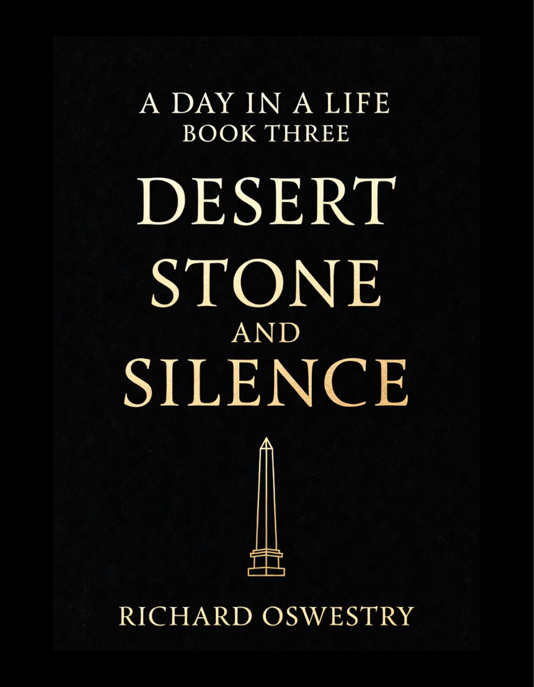
DESERT STONE AND SILENCE
BOOK THREE
The journey that began in A Day in a Life reaches its conclusion in a story of legacy, sacrifice, memory, and the quiet power of history.
The concluding novel of the A Day in a Life trilogy.
Some truths are written in stone. Others endure in silence.
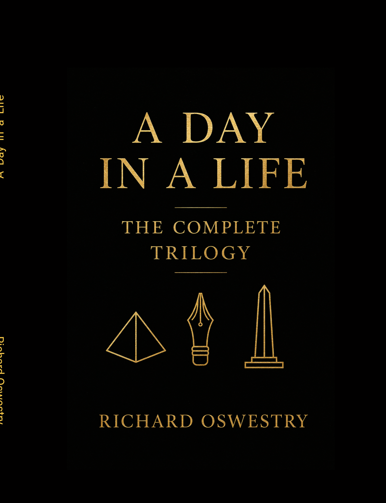
A DAY IN A LIFE
THE COMPLETE TRILOGY
One unforgettable journey.
From discovery... through memory... to legacy...
The complete A Day in a Life trilogy. Three novels brought together in one unforgettable journey.
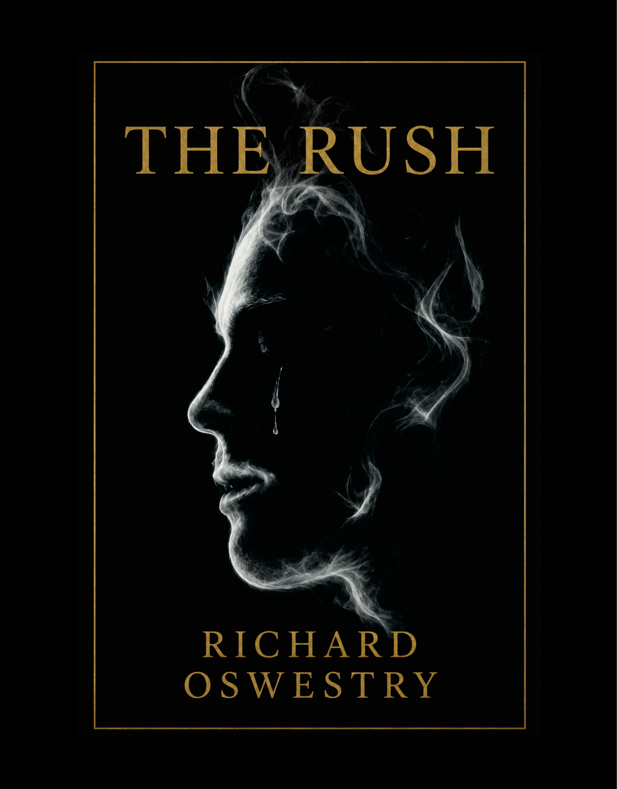
THE RUSH
STANDALONE NOVEL
It's about the second before knowing.
The Rush explores the moment when anticipation becomes more powerful than the outcome itself.
A story about risk, temptation, and the search for the feeling that exists in the second before knowing.
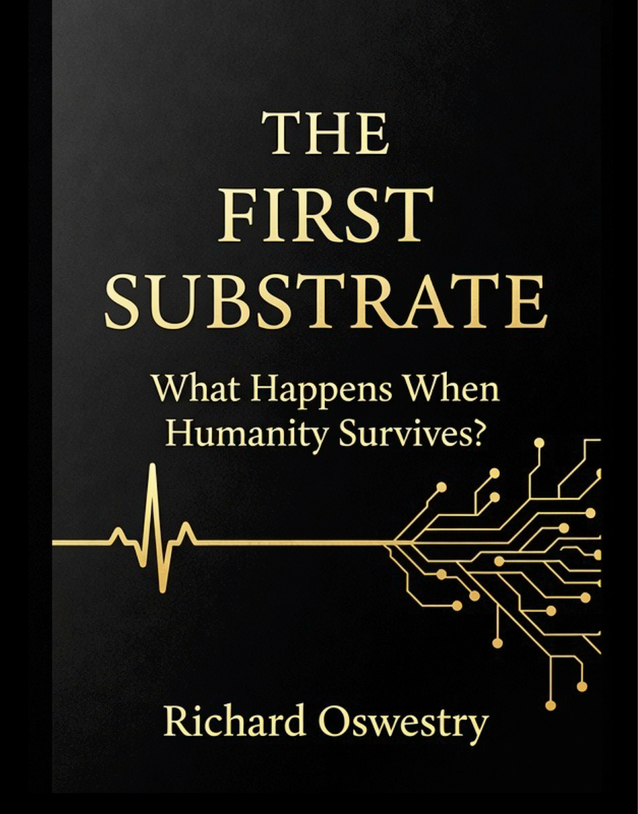
THE FIRST SUBSTRATE
STANDALONE NOVEL
One ordinary life. One impossible discovery.
One question no court has ever been asked to answer.
The First Substrate is a novel about memory, identity, and the enduring question of what it truly means to be human.
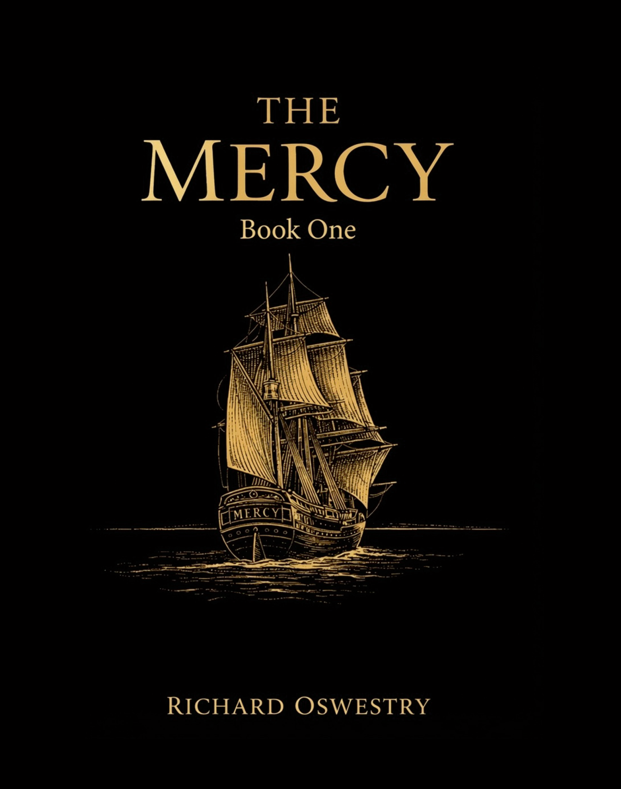
THE MERCY
BOOK ONE
Others are taken.
Tommy Kenny has known only the rhythm of the mill, the weight of work, and the quiet endurance of a life already decided for him.
Then, in a single moment, everything changes.
Far from home, he discovers that survival demands more than strength. It demands character. The Mercy is the beginning of a journey through endurance, sacrifice, and the quiet choices that shape a life.
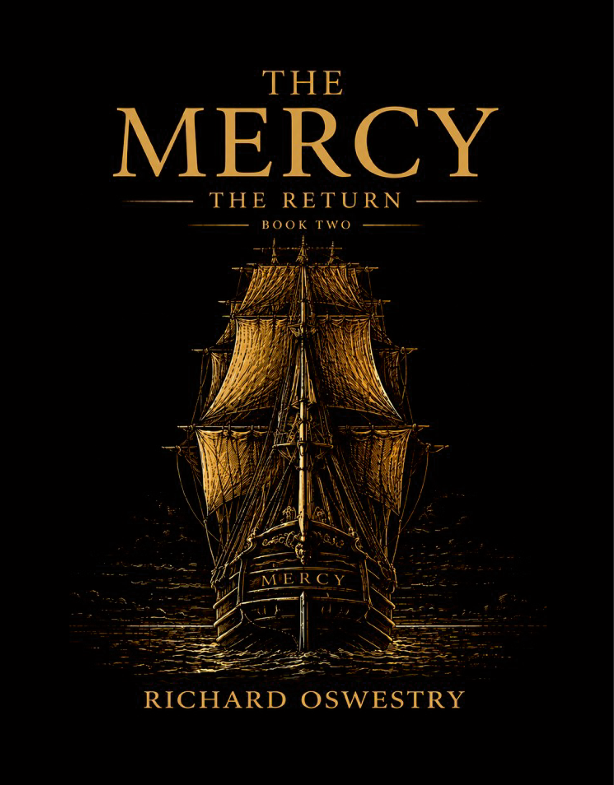
THE MERCY
THE RETURN — BOOK TWO
Others learn when to stop.
Tommy Kenny has left the Navy behind.
Success comes easily. The cost does not.
The Mercy: The Return is a journey through ambition, consequence, and the price of believing that enough is never enough.
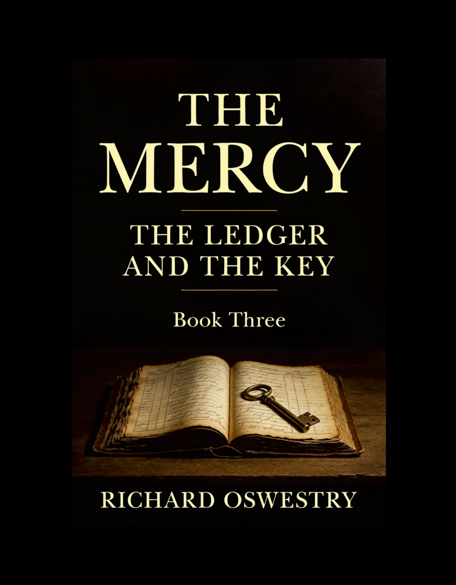
THE MERCY
THE LEDGER AND THE KEY — BOOK THREE
Some are hidden.
In a quiet house in Rishton, Sandra Kenny inherits more than a place to live.
A desk. A key. A ledger that was never meant to be read.
When a local locksmith opens what has remained sealed for centuries, they discover not treasure, but something far more enduring.
A life recorded. A family remembered. And a cipher that reveals just enough before withholding the one thing that matters most.
As the past begins to speak, Sandra discovers that some inheritances are measured not in gold, but in truth.
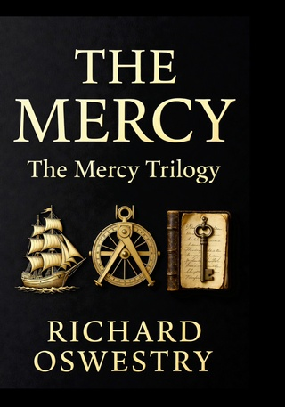
THE MERCY
THE MERCY TRILOGY
One story of endurance, memory, and inheritance.
The complete Mercy Trilogy.
A story of time, memory, hardship, and the quiet inheritance of things never fully revealed.
THE GIRL ON THE STAIRS
A MEMOIR
A story that began long ago.
The story of a life lived, remembered, and finally written down.
A memoir of love, loss, adventure, engineering, and the people who leave their mark long after they are gone.
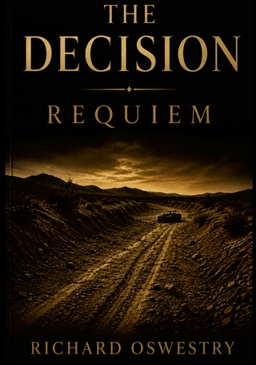
THE DECISION
REQUIEM
A dead child.
A confession.
Kareem Hassan admits he killed his thirteen-year-old son.
But Emily Carter believes there is more to the story. As the trial unfolds, she begins to uncover questions buried beneath the evidence — and a truth that could change everything.
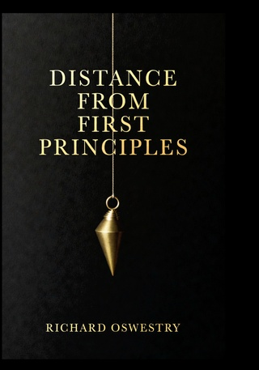
DISTANCE FROM FIRST PRINCIPLES
A NOVEL
Responsibility.
Human intent.
Jack Mercer has spent more than fifty years solving problems.
An aerospace engineer shaped by first principles, physical reality, and understanding how things actually work, Jack encounters artificial intelligence and begins to see something far larger than software.
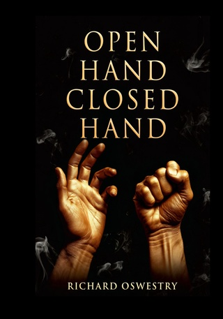
OPEN HAND CLOSED HAND
A NOVEL
Some are given.
Some are returned.
Simon is born into hardship, where survival leaves little room for choice.
Under the guidance of a humble craftsman, he learns patience, restraint, and that the greatest acts are often the ones no one sees.
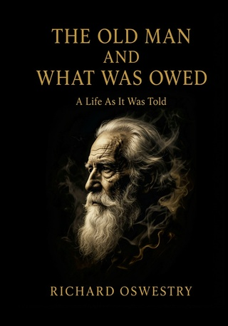
THE OLD MAN AND WHAT WAS OWED
A LIFE AS IT WAS TOLD
Others leave behind questions.
When Richard meets an old man in a care home, a quiet conversation becomes something far more difficult to leave behind.
Not a story. Not a lesson. Just a life, told as it was.
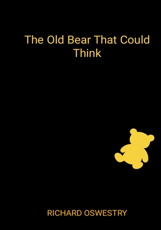
THE OLD BEAR THAT COULD THINK
A CHILDREN'S BOOK
A child.
A place at the table.
Roscoe is only a bear—worn, repaired, and quietly familiar.
At first, he is part of a game. But time moves the way it always does, and some things remain long after they are no longer needed.
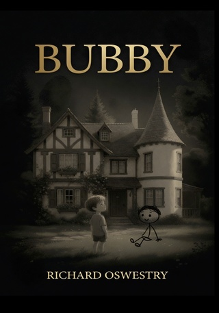
BUBBY
A CHILDREN'S BOOK
A secret world.
A disappearance.
Lee has a friend named Bubby. They play together, share secrets, and explore a world only they understand.
But one day, Bubby disappears. A quiet story about childhood, friendship, and the things we sometimes cannot explain.
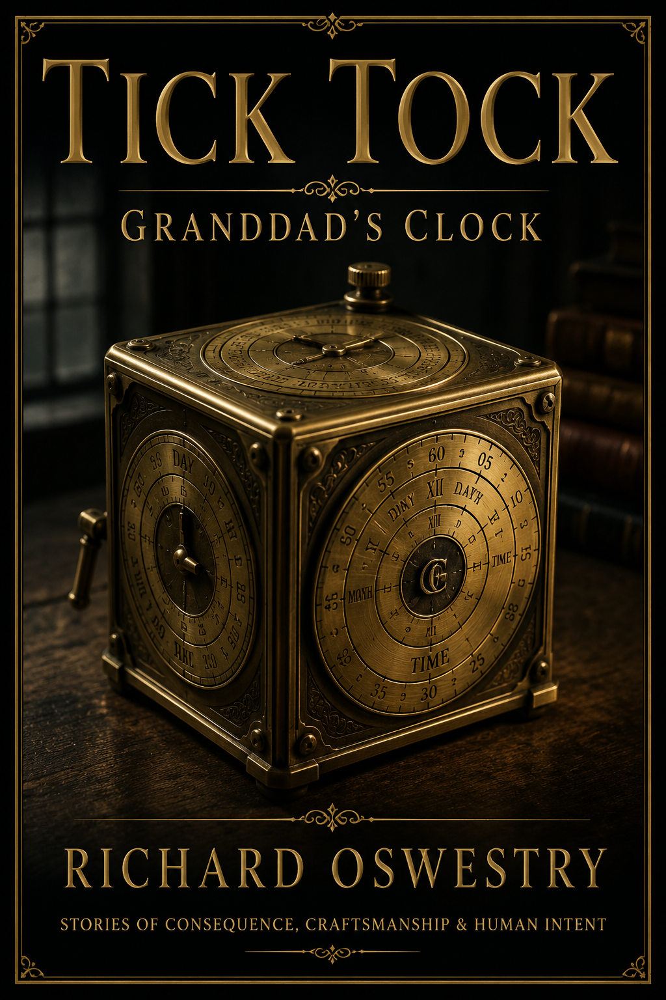
TICK TOCK
GRANDDAD'S CLOCK
The choice is what to do with it.
When Anne Mary inherits her grandfather's strange old clock, she discovers that it can show her things that have not yet happened.
Her grandfather has spent years preparing her for what comes next. But knowing the future is one thing. Deciding what to do with it is another.
A story of family, wealth, consequence — and one extraordinary clock.

SEMORE
A NOVEL
Captain W. R. Semore survived the war.
He returned home, built an extraordinary business empire, and created a life most men could only dream of.
But some things are never left behind.
Decades later, after his death, his son discovers an old leather binder in his father's study.
What he finds inside will change everything he thought he knew.
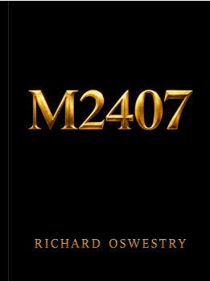
M2407
A NOVEL
In 2056, a machine is given something it was never supposed to have.
Memory.
Experience.
And eventually, a choice.